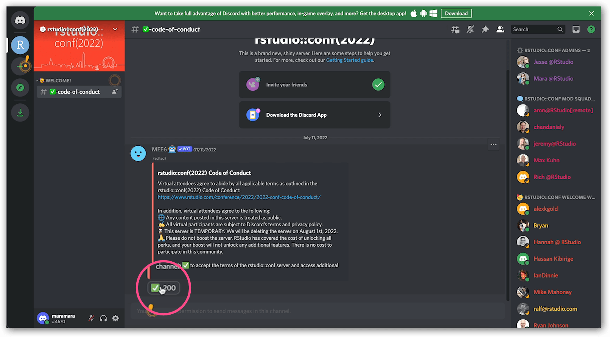

Discord Tips & FAQs
Discord support resources
Before we get into tips and tricks of our own, here are some helpful links provided by Discord Support that are worth checking out if you’re new to the platform:
Why can I only see one channel?
Short answer: You have yet to agree to the Code of Conduct.
How to fix this
Again, the short answer is to click the ✅ icon in the #code-of-conduct channel, but here is a breakdown of what this will look like.
When you first join the rstudio::conf(2022) Discord, you’ll only see one channel, and your name will be in white. So, basically, you’re not fully activated.
To agree to the Code of Conduct, you check the green checkbox icon as a reaction to the lone post in that channel. 
Once you have agreed to the Code of Conduct, other channels will appear in the sidebar!
Expand to view as animation